Surviving Year One
Tales of a Junior Developer
date: TBD
by: Max Beizer
whoami
- Jr. Developer at Centresource Interactive Agency
- Nashville Software School, cohort one
- maxbeizer on twitter, github, IRC, etc.
Credit Where Credit Is Due
Eliza Brock
and the Senior Devs at Centresource
and a misspent youth, but we'll get to that...
- Thank you Eliza and the Devs I have learned so much from so far
set up the misspent youth theme
Credit Where Credit Is Due
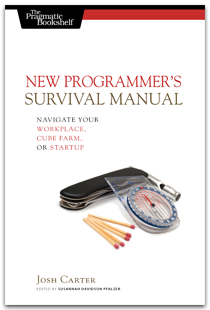New Programmer's Survival Guide by Josh Carter
- The only book I have ever read that focuses on being a new developer, not just being new at writing code
you got a job
You Got a Job. Now What?
You Got a Job. Now What?

- The original Mario Brothers game
Positiviity
The Power of Positive Thinking
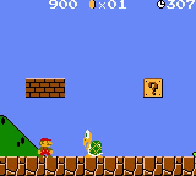Do you feel alone and small in a big world?
Feel like you don't know anything?
YOU ARE WRONG!
You are wrong!
- I hear too many NSSers talk about how they don't know anything
- The simple fact is you know more about web development that a huge majority of the world population
- It's easy to lose perspective around a bunch of experienced devs or when nothing is working for you.
Impostor Syndrome
Impostor Syndrome
Trust me; You belong.
- Explain impostor syndrome
- If you can make it through the NSS curriculum, you belong.
- I am a (bad) professional developer and you had it harder than I did
Projected image
The Power of Positive Thinking
People perceive your projected self-image.
- Project that you are useless and people will start treating you that way
Humility
The Other Edge of the Sword
Humility and graciousness go a long way.
- No one likes the young turk
- Especially when he needs help
- You work in a meritocracy (in terms of the greater community), so earn your stripes
Insist on correctness
Insist on Correctness
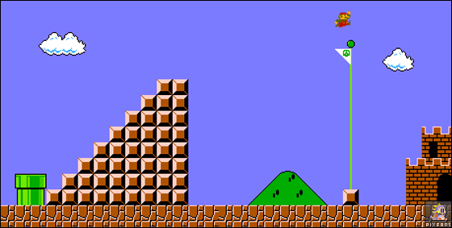Don't settle for less.
- Write beautiful code
- you are learning best practices
- if your the only one, try to change that
Learn to type
Learn to Type
- The single best investment you can make in your career
Asking for help
Due Dilligence
Know before you go.
- Let me google that for you
- Naught without labor
- Hone your troubleshooting skills
- exahust your ideas, but don't agonize
How you should ask
Due Dilligence
- "Here is what I was doing"
- "Here is what I was expecting"
- "Here is what the error (message) was"
- "Here is what I found when I Googled it"
- "Here is what I tried to fix it"
- "Here is what I was doing"
- "Here is what I was expecting"
- "Here is what the error (message) was"
- "Here is what I found when I Googled it"
- "Here is what I tried to fix it"
Know Who to Ask / Who Not to Ask
Maybe don't ask him.
- You will find allies
- You will find foes
- Be sensitive to when others are busy
- Be aware that some may not respect your coding background
- Some people may not be able to communicate on your level
Developer, Know Thy Tools
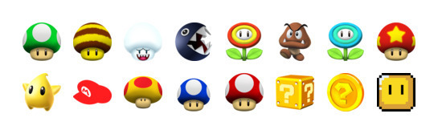Invest in knowing and optimizing your tools.
- Investigate what works best for you
- Keep up with trends and evaluate against old stand bys
- Customize your shell and text editor
Developer, Know Thy Tools
Automate and alias.
Not knowing the way around your own environment is the easiest way to embarrass yourself and to annoy whoever is helping you.
- sharpen your tools -- know your keyboard shortcuts
- great if you're bad at typing like me
- zsh completion for example
- Investigate dotfiles
- version control your dotfiles for safety and quick spin up on a new box
- it's never too early to work on this
Keep a Journal
Avoid the same mistakes and keep track of your accomplishments.
(this may help you get a raise)
- "I'm awesome" file
- don't make the same mistake twice
- See how you have progressed
- a blog work just as well, but may be to involved. Use your journal for blog fodder
It's Coming...
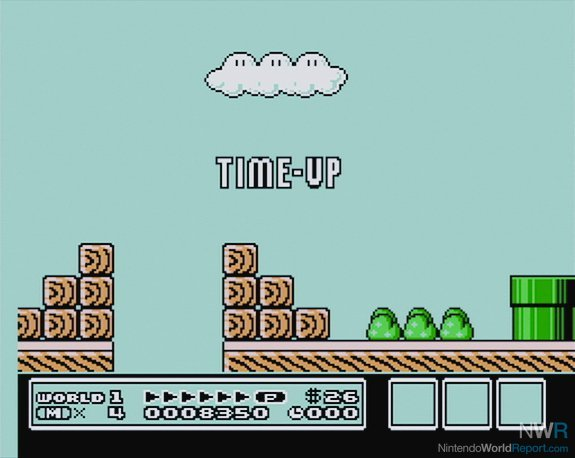Deadlines are real ... and you ought to deliver.
- You work in a high pressure industry that may require night and weekend work
- You will be the low person on the totem pole
- do not let this be a regular thing
- Come through in a big way for your team and watch the doors open up
Leveling Up
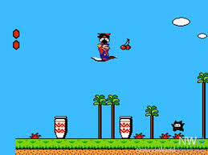When you get your feet underneath you...
- There will come a point where you don't feel like everyday is your first day
- all of the following can/should be done before you feel you have leveled up
Diversify
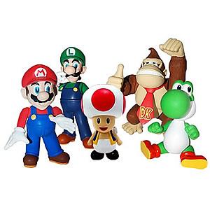Get to know the OTDs.
(other than devs)
- Gain allies and business perspective from OTD colleagues
- the community is small enough where you may work with same people in later jobs-- expand your network
- You know where the devs hang out, you now have access to other professionals
Developer, Love Thyself
Round Developer Syndrome is real!
- Balance the challenges to your mind and body
- Benefits of clearing your head when you are stuck
- Pomodoro technique
- RSI and long term health -- watch out for chording
Find a Way to Help Others
Earn respect and feel good about yourself in the process.
- It's a great feeling to be on the other side of that arrangement
- shows that people trust you
- remember to stop what you are doing and listen, as so many have done for you
- mentor an NSSer
Stand Up for Yourself
Earn respect by being right.
- tell a jerk he is being a jerk
Be Visible
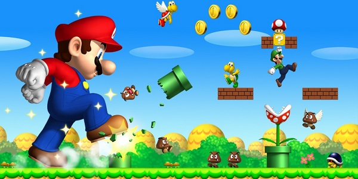Inside your company ... inside your community
- Let your voice be heard
- Are you a wallflower at meetups
- Help your own career by contributing
By the End of Year One
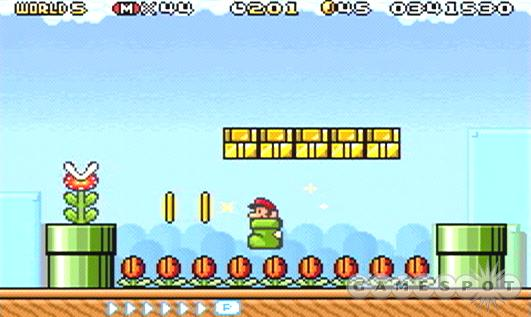- Mario 3
- You should make it a priority to...
Read the Source
What the Seniors won't tell you is ...
- When your just starting out, contributing in a meaningful way to open-source source code is a stretch
- Most READMEs are written by experienced developers who can't imagine what it is like to be you-- if you figured a gem out, write a guide
- Get into the source and see if you can figure it out -- many open source projects have comments
- If it doesn't do what you need, patch it!
Start an Initiative
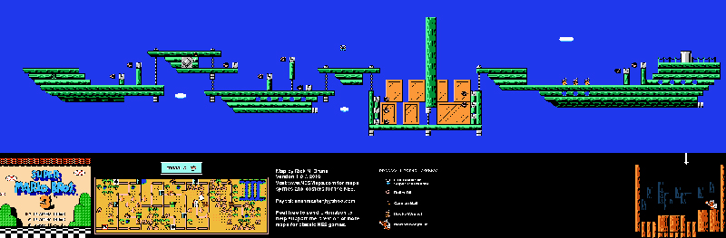Find a pain point where you can make a difference.
- In code or in your company
- watch your stock rise
- remember: be visible
Promote a Culture of Learning
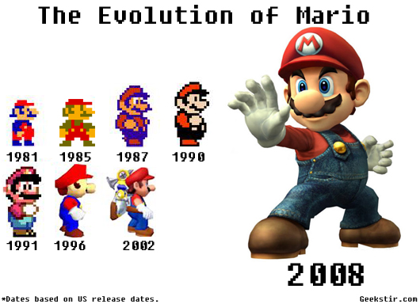You can have a positive impact on your company's culture.
- Start a book club or a lunch and learn of a meetup
- Your enthusiasm can be infectious
Kaizen
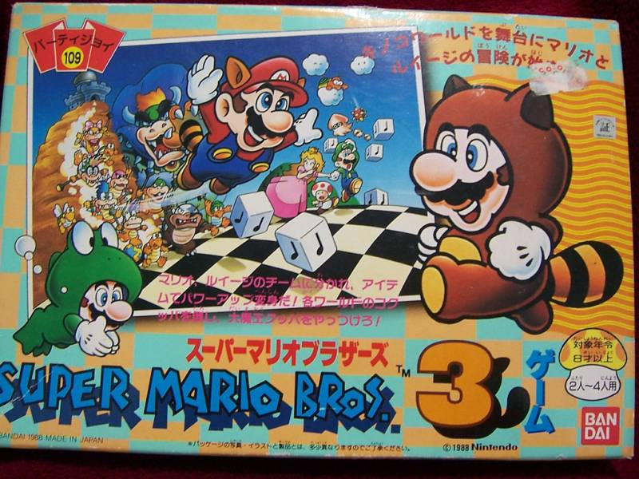Make a habit of self-improvement.
- "Japanese for 'improvement' or "change for the best", refers to philosophy or practices that focus upon continuous improvement"
- never stop getting better
Thank you
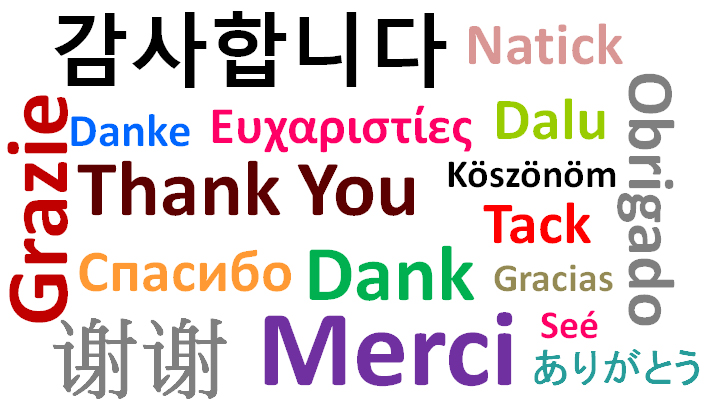Reach Out Any Time
- max.beizer@gmail.com
- everywhere else: @maxbeizer
These slides available: maxbeizer.github.io/jr-dev-survival
Image Credits:
- elizabrocksoftware.com
- joshcarter.com
- grindd.com
- http://galaxyygamingarena.blogspot.com/2012/07/super-mario-bros.html
- images-creation.info
- www.dailymail.co.uk
- www.getmoreengagement.com
- blip.tv
- www.smashbros.com
- http://es.ssb.wikia.com/wiki/Dr._Mario
- http://godzilla.wikia.com/wiki/File:Bowser-big.png
- nintendoeverything.com
- www.lostentertainment.org
- www.smbhq.com
- videogamefigures.blogspot.com
- famicomfreak.blogspot.com
- wallpapers.fansshare.com
- mynintendonews.com
- www.hardcoregamer.com
- epicleveltv.com
- www.wallsave.com
- www.picstopin.com
- www.nintendofuse.com
- www.gamesniped.com
- blogs.providence.edu
/
#